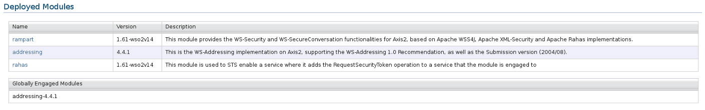

The WSO2 SOA platform has the capabilities of Axis2 to add modules to extend its capabilities. The global modules will affect all the services deployed within the server. If you want to globally engage a particular module, click Manage > Modules > List. On the Deployed Modules page, you can globally engage any listed module.
A module is an archive file that bundles a set of classes, related libraries and third party library dependencies. You can learn more about Axis2 modules from the Axis2 manuals at: http://ws.apache.org/axis2/1_5_1/modules.html
To upload your module archive, all the class files and the module.xml descriptor file have to be available in the archive.
The folder structure of the module archive file will look as follows.
Test.mar
- META-INF
- module.xml
TestModule.class
TestHandler.class
Figure 1: Uploading module archive files.
Once the server has been restarted, the module will be active and displayed on the Deployed Modules page.
The module list contains the following entries for each module.

Figure 2: Available modules
All the available modules are shown above the currently engaged modules. The WS-Addressing module is always globally engaged. This list will be updated when you engage other available modules.